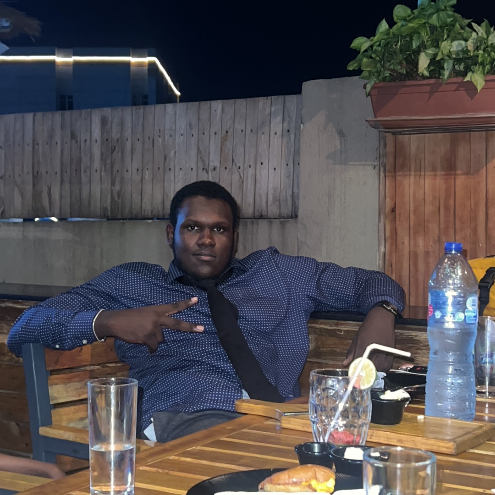

Aminu Abba

Summary
Motivated and analytical graduate with a B.Sc. in Accounting from Nile University, Nigeria, currently pursuing an M.Sc. in Management at the National College of Ireland. Passionate about combining financial knowledge and management insight to deliver accurate reporting, sound analysis, and effective business strategies. Tech-savvy, detail-oriented, and adaptable, with proven ability to communicate effectively and contribute to team success.
Education
- National College of Ireland (NCI)
M.Sc. in Management In Progress (Expected November 2025)
Dublin, Ireland
- Nile University of Nigeria
Bachelor of Science (B.Sc.) in Accounting 2019–2023
Abuja, Nigeria
- Intelligence Quotient Academy
Secondary School Certificate Graduated 2019
Abuja, Nigeria
Work Experience
-
Cashier and Accountant - Sticky Fingers Food Truck
2023
- Managed daily cash transactions with accuracy and accountability.
- Tracked expenses, revenue, and inventory to maintain financial transparency.
- Supported daily operations through effective record-keeping and teamwork.
Accounting Intern — Brains and Hammers
2021
- Assisted in financial data entry, reconciliations, and monthly reporting.
- Collaborated with the accounting team on project-based tasks.
- Gained practical experience with accounting tools and organizational finance.
Skills
- Attention to Detail
- Financial Analysis
- Accounting Principles
- Analytical Thinking
- Account Management
- Microsoft Excel
- Strategy & Problem-Solving
- Information Technology
- Communication
- Copywriting & Translation
- Tech-Savvy Mindset
Awards and Certificate
- Certificate of Completion – Accounting Internship, Brains and Hammers (2021)
- Certificate of Participation – Entrepreneurship and Innovation Workshop, Nile University (2022)
- Certificate of Achievement – Financial Analysis & Excel Mastery (Online Course) (2024)
- Recognition Award – Outstanding Academic Performance, Intelligence Quotient Academy (2019)
Other